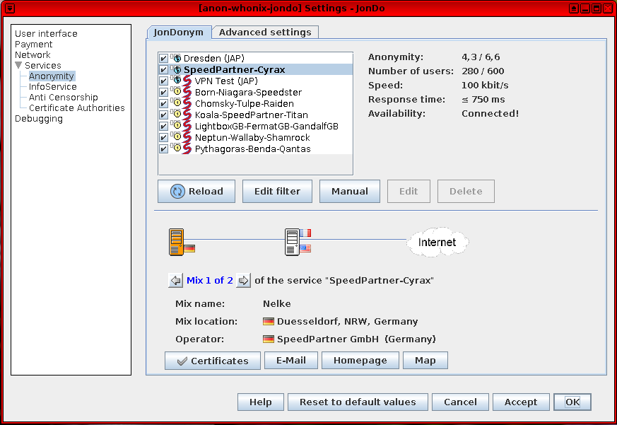

We believe security software like Whonix needs to remain Open Source and independent. Would you help sustain and grow the project? Learn more about our 14 year success story and maybe DONATE!
Combining Whonix with JonDonym
Open the file /usr/local/etc/torrc.d/50_user.conf in a
 text editor of your choice with administrative rights.
text editor of your choice with administrative rights.

 This page is archived.
This page is archived.
Combining Whonix with JonDonym. JonDonym over Tor. Connecting to Tor before JonDonym (User → Tor → JonDonym → Internet ) OR Connecting to JonDonym before Tor (User → JonDonym → Tor → Internet ).
Introduction
 As of June 2021, the JonDonym
website states:
As of June 2021, the JonDonym
website states:
Unfortunately, we have to close our service until 2021-08-31. Until then, our operators will ensure you that you can consume your existing plans. Purchasing new plans is not possible any more.
Similar to Tor, JonDonym has a design based on multiple layers of encryption: [1]
The JonDonym / AN.ON technology is based on the principle of multiple (layered) encryption, distribution and processing. This procedure does not only protect your Internet activities from being observed by third parties (against your access provider, WLAN hackers, advertising services and websites), but also against observation by the individual JonDonym providers themselves. ... It consists of multiple user selectable mix cascades. A cascade consists of two or three separately encrypted mix servers. These mix servers are operated by independent and non interrelated organizations or private individuals who all publish their identity. The operators have to abide by strict provisions which prohibit saving connection data or exchanging such data with other operators.
Every connection from a user is differently encrypted for every mix server within a cascade and transferred through the cascade to the target, e.g. a website. Thereby no mix operator alone can by himself expose the user. Eavesdroppers on the connections to JonDonym cascades get garbage data only, as the connection to every mix is separately encrypted. Also, since a lot of users surf the anonymization service simultaneously, and thus share the same IP address, all connections of every user are concealed amidst each other: a correlation is not possible any more.
JonDonym vs Tor Comparison
JonDonym
JonDonym is an alternative anonymity network which is briefly
compared with Tor. [2]
It is easy to tunnel JonDonym over Tor inside Whonix-Workstation
(anon-whonix), which will be discussed further below. In
theory, Tor on Whonix-Gateway sys-whonix could be replaced
with JonDonym.
The JonDonym network is much smaller than the Tor network, but may be faster. In general, the JonDonym network receives far less attention from security researchers compared to Tor. In 2020, there are 4 premium cascades, 1 free cascade and 2 experimental services. [3] The size of the network has decreased since February 2012], when a random snapshot at that time revealed there were 5 two hop free mix cascades, 11 three hop premium mix cascades and 1 test/experimental, free one-hop service.
Mix servers are operated by independent and unassociated organizations or private individuals who publish their identity. [4]. All JonDonym operators must abide by strict provisions which prohibit saving connection data or exchanging such data with other operators. Placing faith in JonDonym requires trusting in their policy and server administration skills. Neither the mix server administration nor the JonDo software can prevent a man-in-the-middle attack between the mix server and the destination server.
The free two-hop mix cascade currently has a limit of 600 free users, while the premium three-hop mixes have an unlimited amount of users. [5] Free users also have other restrictions such as a maximum file size for up- and downloads (2 MB), no SOCKS5 support, and a maximum of two different countries in the path. [6] A random snapshot of user data in 2020 showed: [7]
- 30 premium users active.
- 133 users relying on free cascades.
- 185 users relaying on experimental cascades. [8]
Tor Network
The JonDonym network is tiny in comparison to the Tor network. A snapshot of Tor metrics on the same day in 2020 reveals around 2.1 million users [9], nearly 7,000 relays and over 1,000 bridges. [10] [11]
The path (circuit) chosen by a Tor client is not predictable and changes every 10 minutes, unless a long-lived onion connection is established. In contrast, a JonDonym user relying on a free two-hop mix cascade will have a predictable entry and exit to the network until the user manually changes it; this similarly applies to all other mix cascades. If a network observer knows the entry or exit, the whole path the client is using through the network is obvious.
The Tor network is run by volunteers from many different countries. Anybody can run a Tor relay -- no formal process or verification of identity is necessary for administrators. The open source software can simply be downloaded, configured and a node volunteered to the network. Due to the open nature of the network, there are obviously both legitimate and malicious nodes. This stands in contrast to JonDonym's small network of known private operators and companies.
A number of attacks have already been performed on the Tor network, such as sniffing of private usernames and passwords by Tor exit relays on unencrypted or SSL-stripped connections. Tor attracts significant interest from researchers, government agencies and adherents due to its popularity and proven track record. Far less attention is given to JonDonym due to the size of the network and user pool which are both serious weaknesses. [12]
Summary
Although they are selling a product, the JonDonym developers seem to be honest about the capabilities and limitations of their network. They constructively participate in the Tor bug tracker, on JonDonym forums, [13] and have been amenable to Whonix reusing their material under an Open Source license (with or without modification) to improve our own documentation.
In some aspects JonDonym is more or less secure than Tor; this depends on the the threat model adopted by the user. Interested readers are suggested to review the network comparison and law enforcement entries to draw a conclusion for their own circumstances.
Tunneling JonDonym over Tor (User → Tor →
JonDonym → Internet) makes sense in some cases
and the JonDonym developers state it is safe; see footnotes.
[14] [15] It is inadvisable to do this for
a long period of time, because it adds a permanent exit server, see: Combining Tunnels with
Tor for background details.
In conclusion, if it is necessary to download something which cannot be done over TLS (and if there are also no hash sums or signatures), the JonDonym exit might be more trustworthy than a random Tor exit in your personal threat model. However, an alternative is to try and use a specific Tor exit from someone that is trusted.
Surveillance Concerns
Advanced Adversary Analysis
Intelligence disclosures in recent years have revealed the assessment of JonDonym by government agencies. [16]
(S//REL) Open Source Multi-Hop Networks
(S//REL) Jondo Anonymous Proxy (JAP)
(S//REL) Championed by German University (Dresden)
(S//REL) (Mostly?) Open source software - some Docs in German (S//REL) Uses a technology known as Cascades
- (S//REL) Each cascade is set of 2 or 3 Mixes
- (S//REL) All internal traffic encrypted
- (S//REL) Free service AN.ON: 5 Cascades
- (S//REL) Premium service JonDoNym: 10 Cascades
(S//REL) Countries: BG, CA, CH, CZ, DE, DK, FR, GB, IT, LU, US, (S//REL) Less than 50 mixes total
(S//REL) Open Source Multi-Hop Networks
(S//REL) Jondo Anonymous Proxy (JAP)
(S//REL) Comparison with Tor
• (S//REL) Not nearly as well studied
- (S//REL) Much smaller contained development community
• (S//REL) More centralized structure (all mixes centrally approved)
• (S//REL) Not as diverse geographically or scalable
- (S//REL) Not as well used or publicized
(S//REL) Not analyzed in great detail here at NSA (or FVEY?) (TS//SI//REL) Much better chance for Global Adversary (SIGINT :-))
- (TS//SI//REL) Sessionization of DNI still would be a problem
In summary, the tone of the IC disclosure suggests they have greater confidence in deanonymizing JonDonym users due to: less geographical divergence; the smaller network size; a relative lack of scrutiny from researchers; and the centralized structure.
Law Enforcement Assessment
Quoted from the JonDonym Law enforcement page [17]:
JonDonym does not make it impossible to uncover individual users, as there is no such thing as a 100% security. However, such a disclosure is by magnitudes more difficult than for other VPN or proxy services, as this would require the cooperation of several states and organizations.
JonDonym is no technology for preventing law enforcement on the internet. In very serious cases, it is possible to uncover the abuse of Mix services. User connections may be individually observed, if all operators of a Mix cascade get such an official order, valid in their respective country (in Germany accourding to §100a/b StPO). The official order has to provide an identification feature for individually observed connections (like the IP address used by the observed person or something else).
However, the independence of JonDonym operators vastly lowers the danger of an illegitimate law enforcement done by non-democratic states or arbitrary individual public officers. Any disclosure basically needs the cooperation of all operators of a Mix cascade. This was never realized for premium mix cascades in the past.
Each year, JonDonym publishes a report regarding any surveillance actions that have been taken and reported by mix operators. It shows that since 2006, five surveillance court orders have been received which affected a total of 6 years of operation (2006, 2009-12, 2014). It is believed that up until now, no JonDonym user has ever been de-anonymized.
It should be noted the Tor network also suffers from legal attacks -- for instance there have been some raids of Tor exit servers -- but this also did not (and could not) lead to de-anonymization. It is suspected that both networks provide strong protections against compromise if they are correctly used. However, they will fail to protect users who deanonymize themselves by posting private information, failing to follow documentation, connecting without going through the anonymity network / without proxy bypass, being affected by viruses and so on.
Connecting to Tor before JonDonym
Introduction
It is possible to run JonDonym inside Whonix-Workstation:
User → Tor → JonDonym →
Internet
If this tunnel configuration is desired, it is suggested to first read the following two related wiki entries:
By tunneling JonDonym over Tor, this might be useful in circumventing Tor bans. However, this configuration will also add a permanent exit relay, which is harmful to anonymity. [18] Other negative impacts include the loss of stream isolation, a worsened browser fingerprint, and unavailability of Tor onion services connections.
The instructions below install JonDo - the IP changer software package (GUI version) manually by hand; a console version is also available. If installation from the JonDonym GNU/Linux repository is preferred, follow the relevant steps here. At the time of writing, the JonDonym repository does not appear to support Debian buster which Whonix is based on; also see footnote. [19]
JonDo IP Changer Proxy Tool Installation
 Note:
Note:
- Non-Qubes-Whonix only.
- If packages are installed by hand, it is not possible to update the software automatically. You will receive a notice later on if new software versions are ready for download. In this case, the new deb package must be downloaded and installed again manually.
- Perform the following steps in Whonix-Workstation terminal. It is recommended to clone the Whonix-Workstation beforehand, as numerous dependencies are installed during this procedure.
1. Download the signing key. [20]
scurl-download https://anonymous-proxy-servers.net/downloads/Software_JonDos_GmbH.asc
Note: All PGP signature files were created with the OpenPGP key
0x2B3CAA3E.
2. Display the fingerprint without importing anything.
gpg --keyid-format long --import --import-options show-only --with-fingerprint Software_JonDos_GmbH.asc
3. Verify the output.
The output should be identical to the following.
pub rsa4096/2146D0CD2B3CAA3E 2014-10-20 [SC] [expires: 2024-10-17]
Key fingerprint = 6899 5C53 D2CE E11B 0E41 82F6 2146 D0CD 2B3C AA3E
uid JonDos GmbH (Software Signing Key) <software@jondos.de>
sub rsa4096/435B56FDF9115DBF 2014-10-20 [E] [expires: 2024-10-17]4. Import the key.
gpg --import Software_JonDos_GmbH.asc
The output should confirm the key was imported.
gpg: key 0x2146D0CD2B3CAA3E: public key "JonDos GmbH (Software Signing Key) <software@jondos.de>" imported
gpg: Total number processed: 1
gpg: imported: 15. Download the JonDo Debian package
(jondo_all.deb). [21]
scurl-download https://anonymous-proxy-servers.net/downloads/jondo_all.deb
6. Download the package signature
(jondo_all.deb.asc). [22]
scurl-download https://anonymous-proxy-servers.net/downloads/jondo_all.deb.asc
7. Verify the JonDo Debian package.
gpg --verify jondo_all.deb.asc
The output should show.
gpg: Signature made Mon 06 Feb 2017 10:14:57 AM UTC
gpg: using RSA key 0x2146D0CD2B3CAA3E
gpg: Good signature from "JonDos GmbH (Software Signing Key) <software@jondos.de>" [unknown]
gpg: WARNING: This key is not certified with a trusted signature!
gpg: There is no indication that the signature belongs to the owner.
Primary key fingerprint: 6899 5C53 D2CE E11B 0E41 82F6 2146 D0CD 2B3C AA3E8. Install the JonDo deb package.
sudo dpkg -i jondo_all.deb
9. Install all unmet dependencies.
sudo apt -f install
Launch JonDonym
After installation a placeholder for JonDonym should appear in the application menu. If it does not appear, it can simply be launched from the terminal.
jondo
Free vs Premium Accounts
Free accounts can connect only to ports 80 and
443. Further, only a HTTPS proxy interface is provided, not
a SOCKS proxy. [23] Premium accounts have unrestricted
port options and support the SOCKS proxy. The full comparison can be
found here.
JonDonym HTTPS Proxy Test
This also works with JonDonym free accounts.
UWT_DEV_PASSTHROUGH=1 curl --tlsv1.3 --proxytunnel --proxy 127.0.0.1:4001 https://check.torproject.org
JonDonym SOCKS Proxy Test
This requires a JonDonym premium (paid) account.
Try this test command. UWT_DEV_PASSTHROUGH=1 curl --tlsv1.3 --socks5-hostname socks5h://127.0.0.1:4001 https://check.torproject.org
If the following message appears, it indicates the local JonDo has not opened a listener. Check if JonDonym has been started or configured to use a non-default port.
curl: (7) couldn't connect to hostIf the following message appears, you are likely only using a free account (therefore SOCKS is unavailable).
curl: (7) Unable to receive initial SOCKS5 response.JonDoFox vs Tor Browser
Users must make an informed decision whether to prefer JonDoFox or Tor Browser.
It may be more sensible to use JonDoFox in order to blend in better with other JonDonym users, but this is unclear. In this case, no special settings are required.
If Tor Browser is preferred for browsing: user → Tor → JonDonym →
destination server, then the proxy settings must be changed via
TorButton. Start Tor Browser, open TorButton settings and choose custom
proxy settings. HTTP should be set to 127.0.0.1, with port
set to 4001 and leave all other fields free except no proxy
for 127.0.0.1. Browse to https://ip-check.info/ to see if it
correctly configured.
Future Integration
See Dev/JonDo if you are interested in a development discussion about JonDo(Fox) being pre-installed in Whonix.
Connecting to JonDonym before Tor
Introduction
 Note:
Note:
- Testers only!
- Qubes-Whonix™ only! Non-Qubes-Whonix is unsupported.
It is possible to configure Tor to use JonDonym as a proxy to
establish the following tunnel: User →
JonDonym → Tor → Internet
A JonDonym premium account is not required; this configuration is functional with JonDonym free. If this tunnel configuration is desired, it is recommended to first read the following two related wiki entries:
The anonymity effects are disputed when tunneling Tor over JonDonym; see here for further information. The instructions below also have a number of current limitations: [24]
- JonDonym is installed in a separate ProxyVM behind
sys-whonix. [25] - This configuration is very impractical. Since Qubes does not yet
support static IP addresses, the Tor configuration setting
/etc/tor/torrc'HTTPSProxy 10.137.10.1:4001' is not stable. When the JonDonym ProxyVM has its IP changed, connectivity breaks and/etc/tor/torrcinsys-whonixneeds a manual update. - It would be preferable to increased usability by documenting how to
run JonDonym directly in
sys-whonix-- under user tunnel with TUNNEL_FIREWALL=true etc. -- however, this would mean less isolation. - This configuration does not yet autostart JonDonym.
Installation and Configuration
1. Create a new standalone ProxyVM called
JonDo-Gateway.
2. Install JonDonym in the new
JonDo-Gateway ProxyVM.
Follow these instructions to install JonDonym from JonDonymn's Debian APT repository. The Using the repository at command line chapter is recommended for installation.
3. Test if JonDonym's https proxy is functional.
curl --tlsv1.3 --proxytunnel --proxy 127.0.0.1:4001 https://check.torproject.org
4. Enable the extended view.
Config → user interface → extended view.5. Configure JonDonymn to listen on all interfaces
so it will be reachable from sys-whonix.
Under network, uncheck:
[ ] Allow access to JAP/JonDo from localhost only (recommended)
6. In JonDo-Gateway ProxyVM, The
iptables rules must be unloaded.
If using Qubes, disable qubes-iptables and qubes-firewall systemd services. Non-Qubes users can skip this.
sudo systemctl mask qubes-iptables
sudo systemctl stop qubes-iptables
sudo systemctl mask qubes-firewall
sudo systemctl stop qubes-firewallOpen file ~/fw-unload in a text editor of your
choice as a regular, non-root user.
If you are using a graphical environment, run. featherpad ~/fw-unload
If you are using a terminal, run. nano ~/fw-unload
Add.
#!/bin/bash
## Copyright (C) 2012 - 2015 Patrick Schleizer <adrelanos@whonix.org>
## See the file COPYING for copying conditions.
set -o pipefail
error_handler() {
echo "ERROR!" >&2
exit 1
}
trap "error_handler" ERR
[ -n "$iptables_cmd" ] || iptables_cmd="iptables --wait"
[ -n "$ip6tables_cmd" ] || ip6tables_cmd="ip6tables --wait"
$iptables_cmd -P INPUT ACCEPT
$iptables_cmd -P FORWARD ACCEPT
$iptables_cmd -P OUTPUT ACCEPT
$iptables_cmd -F
$iptables_cmd -X
$iptables_cmd -t nat -F
$iptables_cmd -t nat -X
$iptables_cmd -t mangle -F
$iptables_cmd -t mangle -X
$iptables_cmd -t raw -F
$iptables_cmd -t raw -X
$ip6tables_cmd -P INPUT ACCEPT
$ip6tables_cmd -P OUTPUT ACCEPT
$ip6tables_cmd -P FORWARD ACCEPT
$ip6tables_cmd -F
$ip6tables_cmd -X
$ip6tables_cmd -t mangle -F
$ip6tables_cmd -t mangle -X
$ip6tables_cmd -t raw -F
$ip6tables_cmd -t raw -X
exit 0Save.
Make ~/fw-unload executable.
chmod +x ~/fw-unloadUnload all iptables firewall rules.
sudo ~/fw-unloadAfter firewall unload, run the following command to see if all firewall rules are really unloaded.
sudo iptables-save | sed -e 's/\[[0-9:]*\]/[0,0]/' -e '/^#/d'The output should show.
*mangle
:PREROUTING ACCEPT [0,0]
:INPUT ACCEPT [0,0]
:FORWARD ACCEPT [0,0]
:OUTPUT ACCEPT [0,0]
:POSTROUTING ACCEPT [0,0]
COMMIT
*raw
:PREROUTING ACCEPT [0,0]
:OUTPUT ACCEPT [0,0]
COMMIT
*nat
:PREROUTING ACCEPT [0,0]
:INPUT ACCEPT [0,0]
:OUTPUT ACCEPT [0,0]
:POSTROUTING ACCEPT [0,0]
COMMIT
*filter
:INPUT ACCEPT [0,0]
:FORWARD ACCEPT [0,0]
:OUTPUT ACCEPT [0,0]
COMMIT7. Disable IP Forwarding in the
JonDo-Gateway ProxyVM.
IP Forwarding could/should be disabled, since it is not required. TODO: document how.
8. Shut down sys-whonix.
- Next set the
sys-whonixNetVM toJonDo-Gateway. - Restart
sys-whonix.
9. Add the IP address of
JonDo-Gateway.
In sys-whonix: Tor configuration file.
1 Sysmaint notice.
Ensure the VM has administrative (sudo / root) access first. See also sysmaint.
2 Platform specific. Select your platform.
Non-Qubes-Whonix
Requires booting into sysmaint session or
 unrestricted admin mode.
unrestricted admin mode.
Graphical Whonix-Gateway USER Session
This is not possible.
Graphical Whonix-Gateway SYSMAINT Session
If you are using a graphical Whonix-Gateway booted into
PERSISTENT Mode | SYSMAINT Session, take the following
step.
System Maintenance Panel ->
Open Terminal -> run
/usr/libexec/gateway-shortcuts/torrc
Graphical Whonix-Gateway Unrestricted Admin Mode
If you are using a graphical Whonix-Gateway and enabled
 unrestricted admin mode, take the following step.
unrestricted admin mode, take the following step.
Start Menu -> System Tools ->
Tor User Config
Terminal Whonix-Gateway
If you are using Whonix-Gateway with command line
interface (CLI), take the following step.
sudoedit
/usr/local/etc/torrc.d/50_user.conf
Requires booting into sysmaint session or
 unrestricted admin mode.
unrestricted admin mode.
Graphical Qubes-Whonix
If you are using Qubes-Whonix™ with a graphical desktop, take the following step.
Qubes App Launcher (blue/grey "Q") ->
Service ->
Whonix-Gateway™ ProxyVM (commonly named sys-whonix)
-> Tor User Config
Terminal Qubes-Whonix
If you are using Qubes-Whonix™ with a terminal, open
a terminal in sys-whonix and run the following command.
sudoedit /usr/local/etc/torrc.d/50_user.conf
Add the following.
Note: 10.137.10.1 is just an example and needs to be
replaced with the IP address of the JonDo-Gateway ProxyVM.
To discover the IP address of the JonDo-Gateway ProxyVM,
run the following command in sys-whonix:
qubesdb-read /qubes-gateway
HTTPSProxy 10.137.10.1:4001Save.
10. Reload Tor.
After changing Tor configuration, Tor must be reloaded for changes to take effect.
Note: If Tor does not connect after completing all
these steps, then a user mistake is the most likely explanation. Recheck
/usr/local/etc/torrc.d/50_user.conf and repeat the steps
outlined in the sections above. If Tor then connects successfully, all
the necessary changes have been made.
If you are using Qubes-Whonix™, complete the following steps.
Qubes App Launcher (blue/grey "Q") →
Service →
Whonix-Gateway™ ProxyVM (commonly named 'sys-whonix')
→ Reload Tor
If you are using a graphical Whonix-Gateway, complete the following steps.
Start Menu → System Tools →
Reload Tor
If you are using a terminal Whonix-Gateway, click
HERE
for instructions.
Complete the following steps.
Reload Tor.
sudo systemctl reload tor@default.service
Check Tor's daemon status.
sudo systemctl status tor@default.service
It should include a a message saying.
Active: active (running) since ...In case of issues, try the following debugging steps.
Check Tor's config.
sudo -u debian-tor tor --verify-config
The output should be similar to the following.
Sep 17 17:40:41.416 [notice] Read configuration file "/usr/local/etc/torrc.d/50_user.conf".
Configuration was valid11. In sys-whonix, test if Tor is able
to use the https proxy that JonDonym is providing.
UWT_DEV_PASSTHROUGH=1 curl --tlsv1.3 --socks5-hostname socks5h://127.0.0.1:9050 https://check.torproject.org
The procedure is complete and Tor will use JonDonym as a proxy.
JonDoBox: Substituting Tor with JonDonym
This was just a development idea with some limited progress. Interested readers can review the material here.
Screenshots
Figure: Java Anon Proxy (JonDonym) Client Software in Whonix

Figure: JonDonym Client Software Settings

License
Gratitude is expressed to JonDos for permission to use material from their website. The "Whonix JonDonym" wiki page contains content from the JonDonym documentation Network page.
Footnotes / References
- https://web.archive.org/web/20220120211949/https://anonymous-proxy-servers.net/en/help/jondonym.html
- This is an informal opinion by lead Whonix developer Patrick Schleizer. Last updated in May, 2020.
- https://web.archive.org/web/20160707165220/https://anonymous-proxy-servers.net/en/status/
- https://web.archive.org/web/20211108140444/https://anonymous-proxy-servers.net/en/help/certificates.html
- In 2012, the random snapshot identified the two-hop free mix cascades had 1940 users with a maximum available capacity of 2750 users. 1367 users were using the test/experimental free one hop service which did not advertise a maximum user capacity. From 16 to 63 users used one of the 11 three-hop premium mix cascades and no maximum user restriction was advertised. There were 350 premium users in total.
- https://web.archive.org/web/20230330184651/https://anonymous-proxy-servers.net/en/premium.html
- https://web.archive.org/web/20160707165220/https://anonymous-proxy-servers.net/en/status/
- With no advertised limit on the number of users.
- https://metrics.torproject.org/userstats-relay-country.html
- https://metrics.torproject.org/networksize.html
- A similarly large difference was evident in 2012: according to Tor metrics page ([ on that same day] the Tor network had on that day had around 3,000 relays (approximately 1,000 had the guard flag and around 900 had the entry guard flag). An estimated 500,000 users were using the Tor network at that time].
- For instance, it is likely trivial for advanced adversaries to conduct end-to-end correlation attacks.
- For example, see: ip-check.info some false values and confuses TBB users.
- Quoted from the JonDonym
network comparison page:
[...] making surfing considerably slower but, in some individual cases, even more secure than with JonDonym alone.
- According to the Access to the Tor network with JonDo page, JonDonym natively supports being tunneled over Tor. This also implies the developers do not argue that tunneling JonDo through Tor is less safe. This option is unneeded in Whonix, since all traffic originating from Whonix-Workstation™ is tunneled through Tor in the first place. Enabling that JonDonym option inside Whonix-Workstation™ is discouraged, since it would lead to a Tor over Tor scenario.
- https://web.archive.org/web/20210617211029/https://search.edwardsnowden.com/docs/InternetAnonymity20112014-12-28nsadocs
- https://web.archive.org/web/20230330171711/https://anonymous-proxy-servers.net/en/law_enforcement.html
- See also: Tor Plus VPN or Proxy
- In the section stating "The repository is signed with the OpenPGP
key 0x2B3CAA3E", it is unrecommended to download the key from a
keyserver with
apt-key, using only the short key fingerprint. Instead, it is more secure -- equivalent to using the long key fingerprint -- to download the signing key over https with your browser:
1. Right-click on 0x2B3CAA3E and "Save Link As..."
2. Save the key in the home folder
3. Rungpg --import 0x2B3CAA3E - Alternatively use Tor Browser to download the signing key here.
- Alternatively use Tor Browser to download the package from here.
- Alternatively use Tor Browser to download the signature from here. Right-click and select "Save Page As..." to save the signature.
- https://web.archive.org/web/20210511005748/https://anonymous-proxy-servers.net/en/help/otherApplications.html
- https://forums.whonix.org/t/connecting-to-jondonym-before-tor-user-jondonym-tor-internet
- The motivation behind this is better security. JonDonym is not installable from Debian, but instead is a package from the anonymous-proxy-servers.net website / Debian apt repository. In theory, Tor should not be compromised if JonDonym is compromised. Also, if JonDonym is compromised to begin with or more easily exploited than Tor, then it is desirable to run it in a separate ProxyVM for better isolation.
- Socks proxy test - premium accounts only. curl --tlsv1.3 --socks5-hostname socks5h://127.0.0.1:4001 https://check.torproject.org
Categories: Documentation